実際に参拝・写真はすべて自前
由緒・創建
三種の神器のひとつ、草薙神剣を祀る。日本武尊が東征の帰りに留め置いた剣を、妃の宮簀媛命が熱田の地に祀ったのが始まりとされる（社伝では景行天皇の代、約1,900年前）。『延喜式』の名神大社で、勅祭社。公式は、伊勢の神宮につぐ尊い社と位置づけている。相殿には五柱の神を祀り、「五神さま」と呼ばれる。
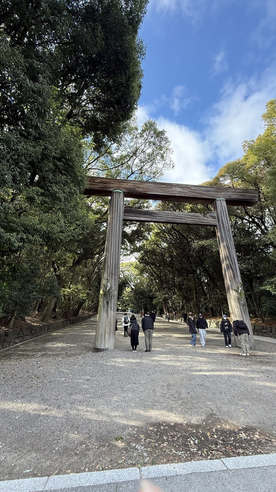
参道に立つ木の大鳥居。
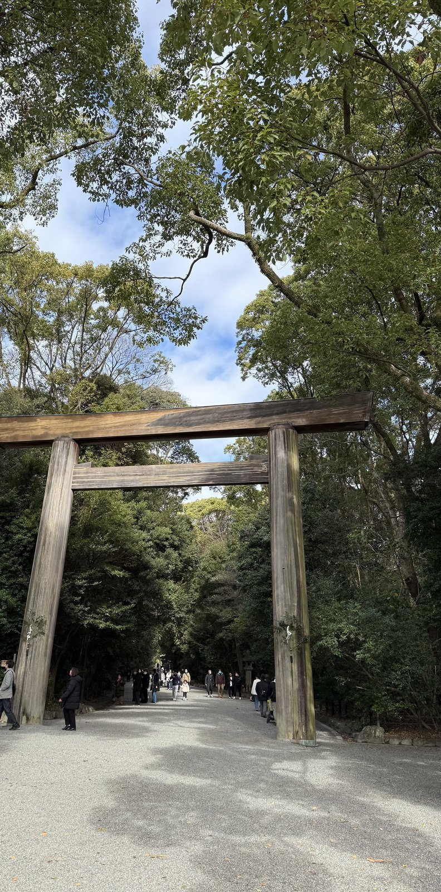
もう一つの木の大鳥居。柱の太さが分かる。
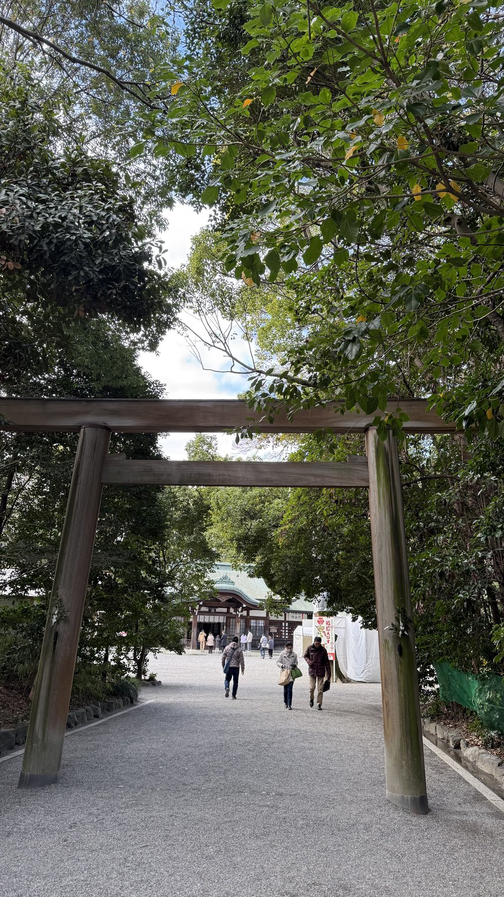
木の鳥居の向こうに、拝殿のある広場が見える。
見どころ
拝殿。参道の木の大鳥居。境内の大楠——案内板には、弘法大師のお手植えとも伝えられ、樹齢は千年以上といわれる、とある。佐久間燈籠——案内板には、寛永7年（1630）に寄進され、京都・南禅寺と東京・上野東照宮の大燈籠とともに「日本三大燈籠」として名高い、とある。朱塗りの南新宮社——案内板に、社殿は「当神宮唯一の朱塗り」とある。別宮の八剣宮。境内には本宮のほか、別宮1社・摂社12社・末社31社がある（公式）。
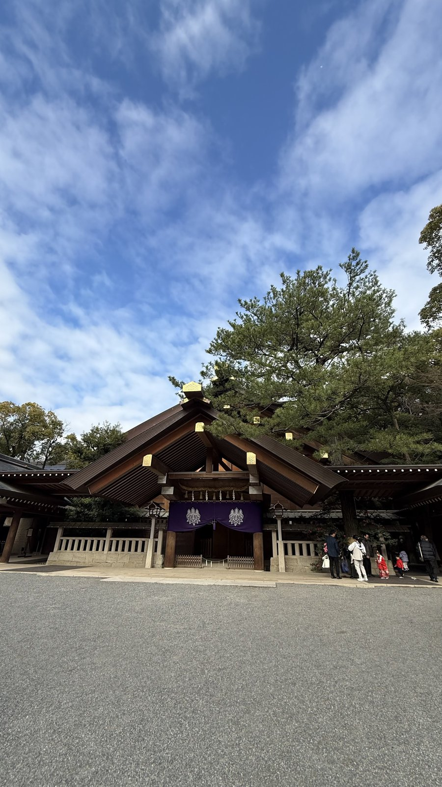
拝殿の正面を見上げる。屋根の端に金の飾り金具が光る。
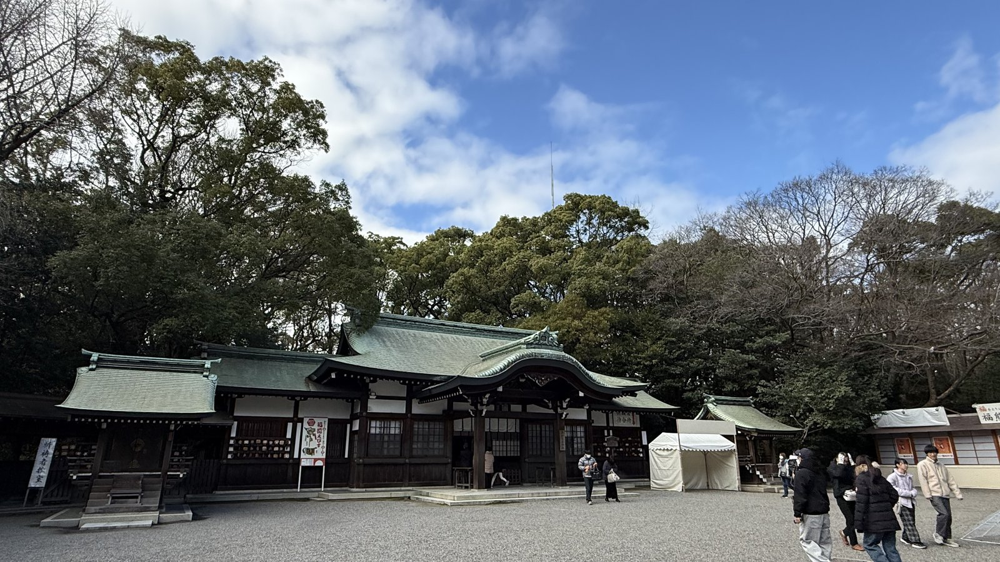
緑青色の屋根の建物が並ぶ境内。
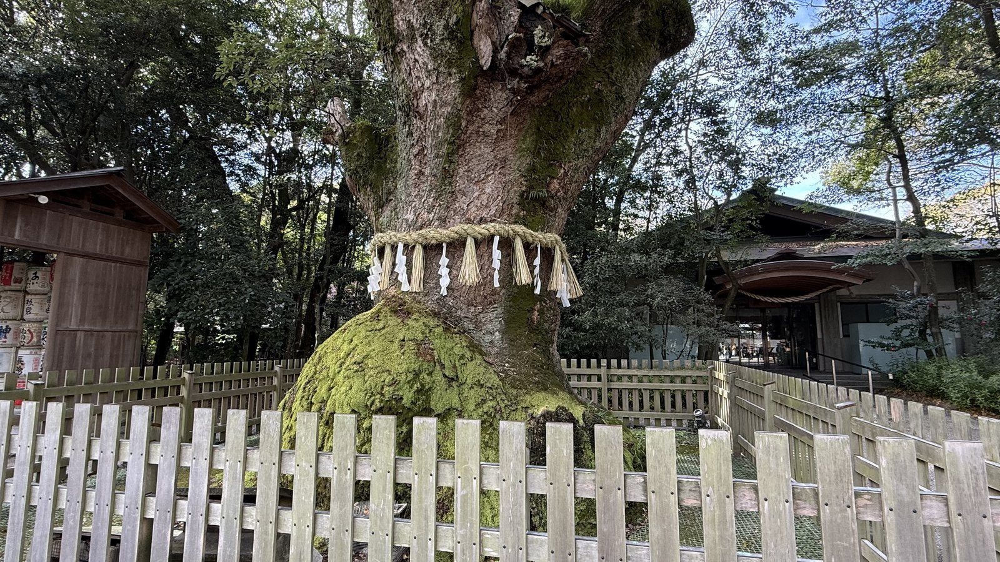
境内の大楠。根元に注連縄が巻かれ、柵に囲まれている。
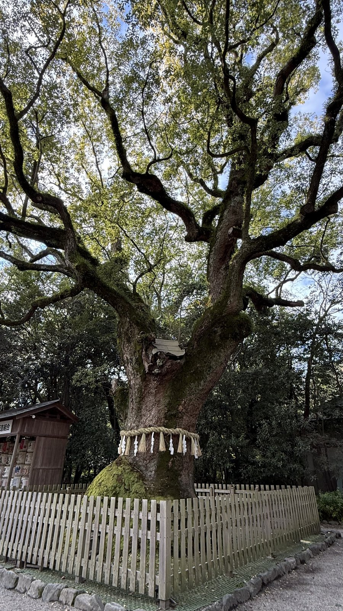
大楠の全景。枝が大きく広がる。
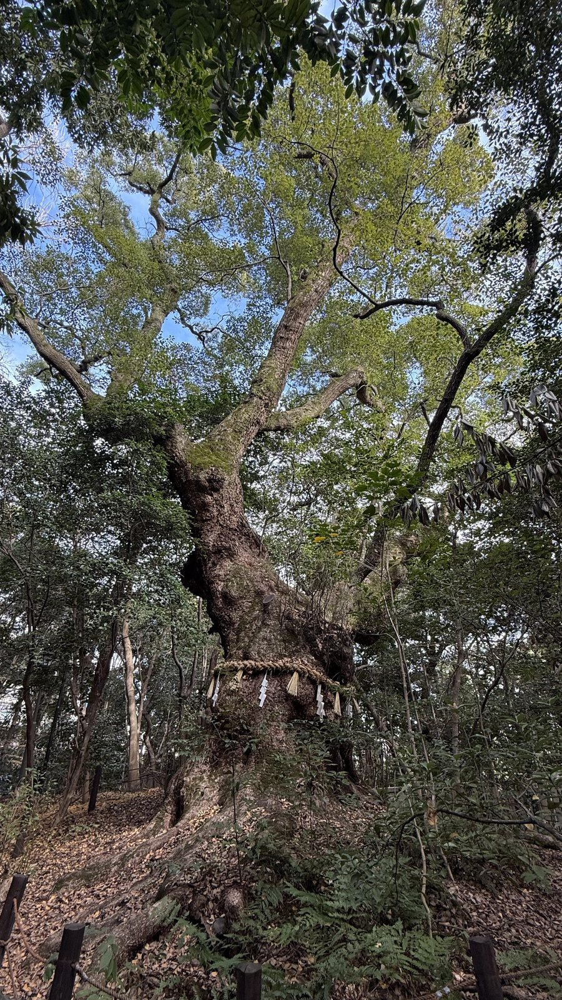
森の中に立つ大木。幹に注連縄が巻かれている。
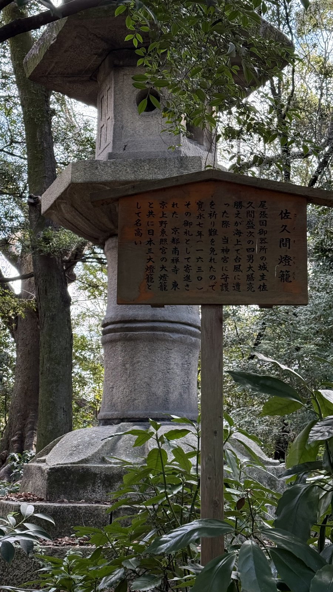
佐久間燈籠。大きな石燈籠の前に案内板が立つ。
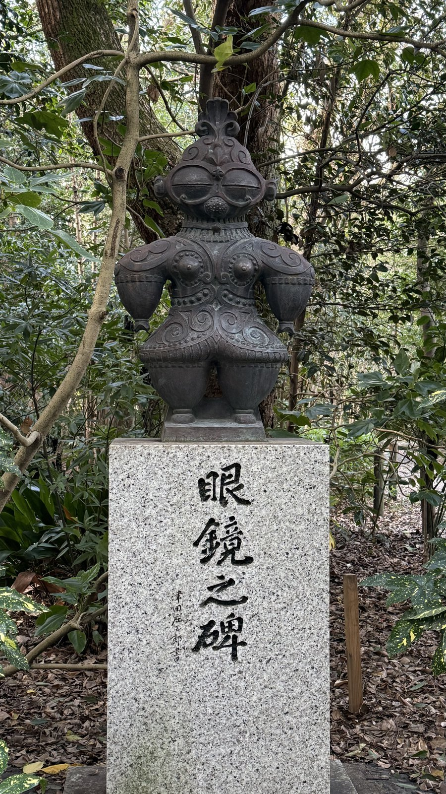
「眼鏡之碑」。石碑の上に、土偶の像がのる。
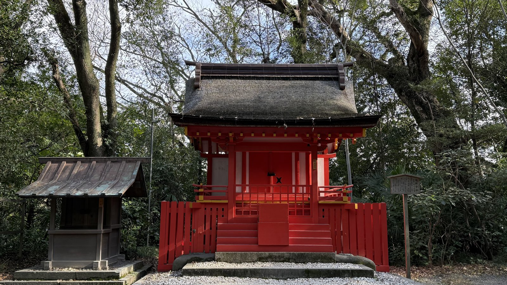
南新宮社。朱塗りの社殿が木立の中に建つ。
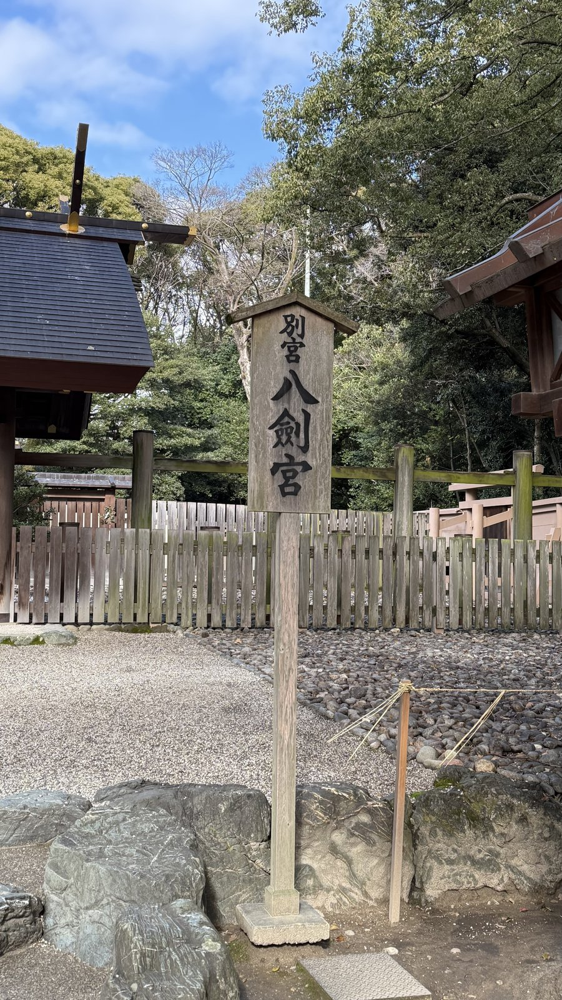
別宮・八剣宮の標柱。奥に社を囲む柵が見える。
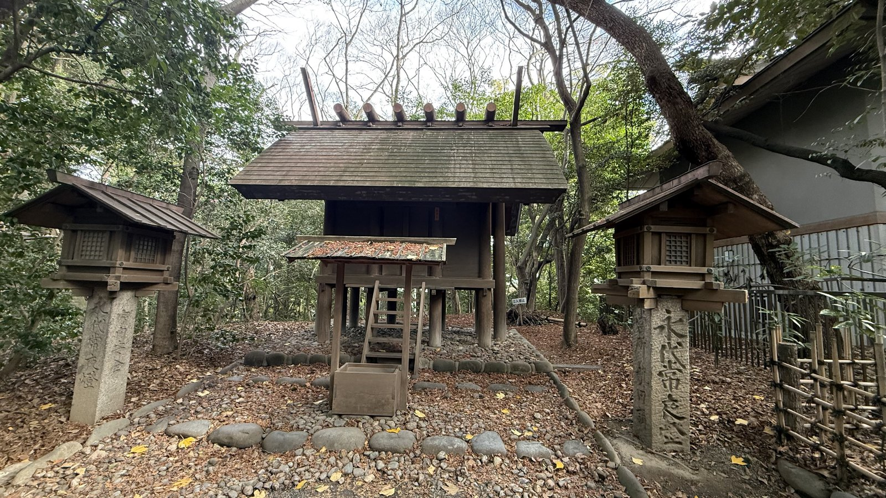
木立の中の小さな社。両脇に石灯籠が立つ。
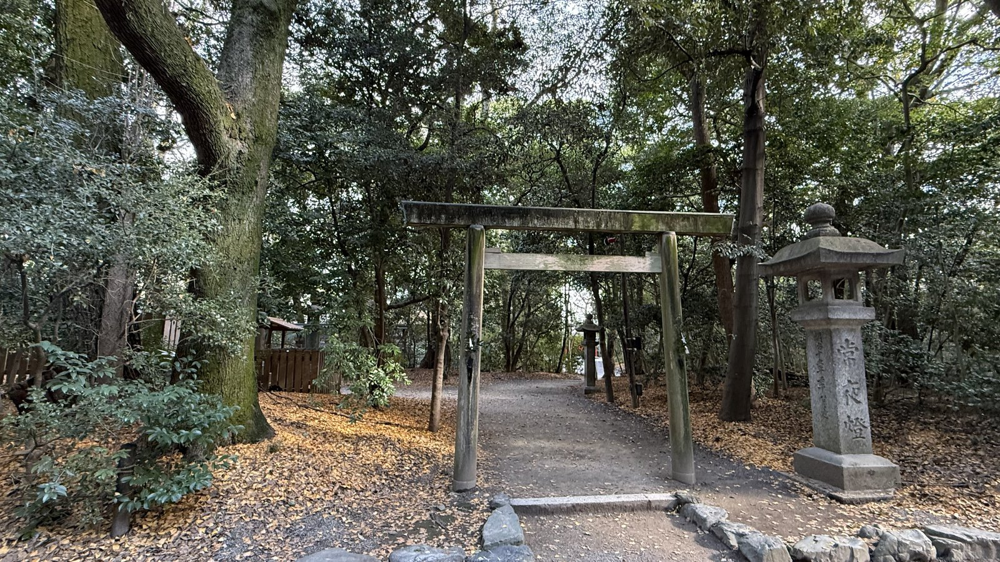
森の道に立つ、小さな木の鳥居と石灯籠。
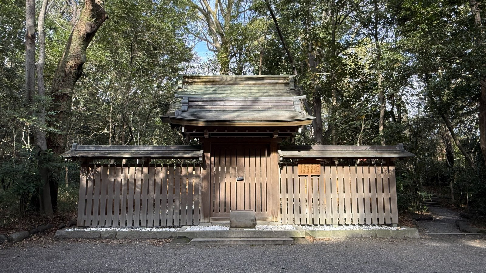
板塀に囲まれた小さな社。
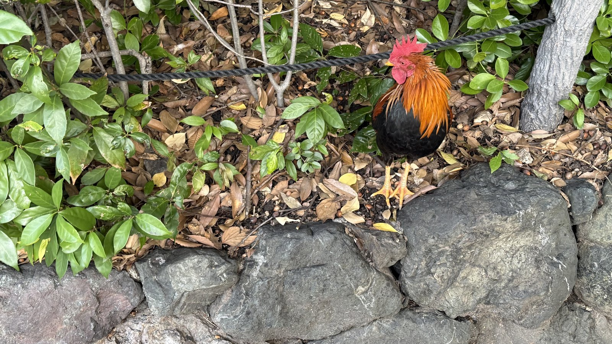
境内にいた鶏。
文化的背景
神器のうち、剣は熱田に、鏡は伊勢にある。本殿は明治26年に、尾張造から伊勢と同じ神明造に改められた（公式）。
相殿の宮簀媛命と建稲種命は、尾張氏の遠祖とされる。